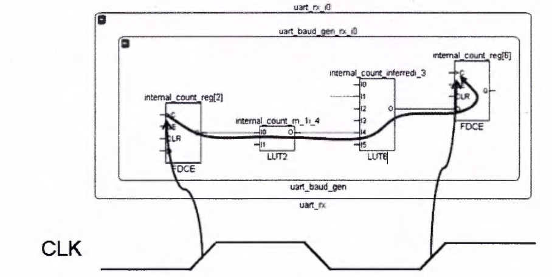

STATIC TIMING ANALYSIS (STA)
Hanoi Friday, September 22, 2016 -- by VuTang
Static timing analysis (STA) is a simulation method of computing the expected timing of a digital circuit without requiring a simulation of the full circuit (Wiki).
More information about STA in Vietnamese at Tìm hiểu về Static Timing Analysis.
Basic knowledge
Definitions
Clock Signal
Clock là một tín hiệu có chu kì có các thuộc tính sau: Period (Chu kì), Duty Cycle, Jitter, Phase...
Một số đặc tính đáng chú ý của clock xuất hiện trong hệ thống thực tế:
-
Clock Skew: là hiện tượng mà trong một mạch đồng bộ (asynchronous circuit) với cùng một nguồn clock đầu vào nhưng đến các phần tử Flip Flop (Clocked Element) khác nhau trong những thời điểm khác nhau.
-
Clock Jitter: là độ lệch của sườn clock thực tế so với sườn clock lí tưởng. Có nhiều loại Jitter khác nhau như: Cycle-to-Cycle (độ chênh lệch giữa hai chu kì liên tiếp), Period (sự thay đổi lớn nhất của chu kì clock trong vòng 100 chu kì - cycles)
-
Clock Latency: Là khoảng thời gian trễ từ nguồn clock (clk port, MMCM output pin, ...) để phần tử dùng clock đó (clocked element).
-
Synchronous/Asynchronous Clock:
-
Nếu 2 clocks được tạo ra bởi 2 nguồn khác nhau thì được mặc định là không đồng bộ (asynchronous) kể cả trong trường hợp là cùng tần số. Nguyên nhân: hai nguồn clocks khác nhau sử dụng các bộ oscillator khác nhau, các bộ oscillator này có độ sai lệch theo thời gian khác nhau nên dẫn đến quan hệ phase và period giữa hai clock không được cố định (sai lệch của bộ oscillator được đo bằng ppm -- parts per million hoặc ppb -- parts per billion)
-
Nếu 2 clocks được tạo ra từ một nguồn, mặc dù có thể phase và frequency khác nhau nhưng vẫn được xét là đồng bộ.
-
Setup/Hold Time
- Setup/Hold Time:
Xét một Flip Flop có chân clock CLK, data in D, data out Q.
Định nghĩa về Setup/Hold Time được biểu diễn trong hình vẽ sau:
Về cơ bản, để một Flip Flop hoạt động đúng chức năng, dữ liệu đưa vào đầu vào D phải thỏa mãn điều kiện Setup Time và Hold Time. Trong đó, Setup Time là khoảng thời gian nhỏ nhất mà Data in phải giữ ổn định trước thời điểm sườn lên clock; Hold Time là khoảng thời gian nhỏ nhất mà Data in phải giữ ổn định sau thời điểm sườn lên clock.
- Setup/Hold Time Violation: Khi đầu vào D vi phạm điều kiện Setup/Hold Time, kết quả đầu ra Q có thể xảy ra một trong các trường hợp ở hình sau:
- Metastability
-
Static Timing Path là một path mà:
- Bắt đầu từ một Clocked Element
- Truyền lan qua các phần tử logic cũng như dây nối
- Kết thúc tại một Clocked Element
Setup check/Hold check
Basic definitions is used in Setup check/Hold check.
Launch edge:
Capture edge:
Hold relationship:
Setup relationship:
Setup check:
Checks that a change in a clocked element has time to propagate to other clocked elements before the next clock event.

STA with Vivado
Xilinx performance baselining
Để có thể phân tích một design hiệu quả, kĩ sư có thể dựa vào baselining mà Xilinx giới thiệu. Chi tiết về các bước thực hiện phân tích theo Xilinx được thể hiện trong các hình vẽ sau. Trong đó có ba bước chính:
-
Optimize Internal Paths: Tiến hành phân tích, tối ưu nội bộ FPGA.
-
Optimize Entire Chip: Tiến hành phân tích toàn bộ FPGA trong đó bao gồm cả kết nối nội bộ cũng như các kết nối với chip bên ngoài
-
Fine-tune: Bổ sung thêm các constraint liên quan đến exception path, floor planning
Trong báo cáo này sẽ tập trung vào mục Optimize Internal Path. Quá trình này được thể hiện trên côt dọc thứ nhất của sơ đồ.
Xilinx timing analysis tool
Vivado timing analysis report
Một số khái niệm cơ bản trong Xilinx Timing Report.
Trong các timing report, thường xuất hiện các khái niệm như WNS/TNS, WHS/THS. Các tham số này được sử dụng để đánh giá một design có timing violation hay không. Định nghĩa của các tham số này như sau:
-
WNS: Worst Negative Slack. Kết quả của quá trình Setup Check
-
TNS: Total Negative Slack. Tổng giá trị của tất cả các Negative Slack
-
WHS: Worst Hold Slack. Kết quả của quá trình Hold Check.
- THS: Total Hold Slack. Tổng giá trị của tất cả các Hold Slack.
How does Vivado calculate Hold Time Slack?
Hold Time Check được xét trên cùng một sườn clock của Source Clock và Destination Clock.
Xét một Static Timing Path cụ thể có sơ đồ như hình dưới đây.
Timing path được tính giữa F1 và F2 (2 Clocked Elements), F1/F2 sử dụng chung clocks được lấy từ CLKOUT1 của MMCM2_ADV. Chi tiết về path này được ghi rõ trong report sau:
Ở mục Summary của Path Report có các thông tin sau:
-
Name: Tên của path trong design
-
Slack (Hold): Negative Hold Slack
-
Source: Pin Clock in của F1
-
Destination: Pin Data in của F2
-
Path Group: group clock của path đang được xét, ở đây là generated clock ad9122_tx1_serdes_clkout1
-
Path Type: Loại path đang được xét, Hold hoặc Setup (???)
-
Requirement: (???)
-
Data Path Delay: Delay giữa F1/F2. Trong trường hợp này, không có bất kì phần tử logic nào nằm trên path này, do đó Data Path Delay được tính bằng tổng của: FlipFlop Delay (thời gian từ khi có input đến khi có output của FF) và Net Delay (trễ trên dây nối).
-
Logic Level: (Xem lại định nghĩa của logic level)
-
Clock Path Skew: được tính bằng DCD-SCD-CPR trong đó: DCD là Destination Clock Delay, SCD Source Clock Delay và CPR là Clock Pessimism Removal.
- Clock Pessimism Removal (CPR) is the removal of artificially induced pessimism from the common clock path between launching startpoint and capturing endpoint.

Ở mục Source Clock Path, report sẽ mô tả chi tiết đường đi của Source Clock. Theo như report ở hình trên, để đến được F1, Source Clock sẽ phải đi qua: IBUFDS & BUFG, PLL2_ADV & BUFGCTL, MMCM2_ADV & BUFG như ở hình vẽ đầu tiên.
Qua report ta rút ra được một số nhận xét như sau:
-
Sau khi đi qua các phần tử như BUFG, IBUFDS, BUFGCTL ..., clock bị trễ đi một khoảng thời gian
-
Sau khi đi qua các phần tử tạo clock như MMCM2_ADV, PLL2_ADV..., tùy theo cấu hình mà clock có thể giảm hoặc tăng độ trễ (giá trị có thể âm hoặc dương).
Phần Data Path sẽ mô tả chi tiết hơn về delay giữa F1/F2, cái mà đã được nhắc đến ở mục Sumary.
Phần Destination Clock Path có chức năng tương tự như phần Source Clock Path, sẽ mô tả chi tiết đường đi của Destination Clock Path.
Với Report như trên, ta có thể vẽ được Timing Diagram cho Path này như sau:
Trong đó:
-
Source Clock Path Delay bằng 0.975 ns được tính từ tổng các delay trên các phần tử mà clocks đi qua, giá trị này có thể đọc được ở dòng cuối cùng của Source Clock Report.
-
Data Path Delay bằng 0.424 ns là giá trị của delay giữa F1/F2, giá trị này có thể đọc được từ dòng cuối cùng của Data Path report. Lưu ý rằng giá trị đọc được đã được cộng thêm Source Clock Path Delay.
-
Destination Clock Path Delay bằng 1.559 ns được tính giống như với Source Clock Path Delay.
Giá trị Negative Hold Time Slack sẽ được tính bằng:
Source Clock Path Delay + Data Path Delay -- Destination Clock Path Delay = 0.975 ns + 0.424 ns -- 1.559 ns = - 0.220 ns**
Kết quả này giống với Report của Xilinx Vivado.
How does Vivado calculate Setup Time Slack?
Quá trình tính toán Setup Time Slack được thực hiện tương tự như Hold Time Slack như được thực hiện trên hai sườn clock khác nhau.
Timing Analysis TCL Command
get_clocks
-
Description: Được dùng để list ra các clocks trong thiết kế hiện tại.
-
Syntax:
get_clocks [-regexp] [-nocase] [-filter <arg>] [-of_objects <args>] [-match_style <arg>] [-include_generated_clocks] [-quiet] verbose] [<patterns>] -
Examples:
get_clocks//getting all clocks in current designget_clock adc*// getting all clocks that has pattern "adc" in its nameget_clock {adc* clk_out1*}// getting all clocks that has any pattern listed in {} in its nameget_clocks -include_generated_clocks adc_clk_fwd// getting adc_clk_fwd and all of its generated clocks
report_clocks
-
Description: reporting about a clocks or a list of clocks
-
Syntax:
report_clocks [-file <arg>] [-append] [-return_string] [-quiet] [-verbose] [<clocks>] -
Examples:
- report_clocks // reporting all clocks in current design
- report_clocks --file report_clock_evt2a.txt // reporting and then outputting this content to an output file. Create output file if it is not existed.
- report_clocks [get_clocks adc_clk_fwd] // reporting about particular clock that is gotten by using get_clocks command.
Xilinx Design Constraint (XDC)
Design with the 7 series
Clocking Resources in 7 series.
Clock regions: Mỗi die FPGA được chia thành các clock regions. Chiều cao (high) của mỗi clock regions là 50 CLBs (50 CLBs rows), bề rộng chiếm một nửa die.
Clock Management Tile (CMT): Mỗi clock region chứa một CMT. Trong mỗi CMT chứa: 01 Mixed-Mode Clock Managers (MMCMs), 01 Phase Locked Loop (PLL).
- Clock-Capable Inputs (CCIO): bất kì một thiết kế FPGA đồng bộ nào (synchronous design) đều cần phải cung cấp ít nhất một đường clock reference từ bên ngoài chip. Đường clock này sẽ được đưa vào chip FPGA bằng các port đặc biệt (clock-capable) được thiết kế riêng cho clock. Đối với 7 series FPGA sẽ có 4 ports clock-capable. Trong đó: 2 port là Multi-Region Clock Capable (MRCC), 2 ports còn lại là Single Region Clock Capable (SRCC). IBUFG, IBUFGS có thể được sử dụng để map tín hiệu clock đến các chân clock-capable.
-
Global Clocking: Global clock networks cho pheps phân phối clocks đến các clocked element trên chip die. Global clocks are driven by BUFGCTRL located in the middle of the die.
-
Global Clocking Buffer (BUFGCTRL):
-
For Clock Multiplexing - BUFGMUX
-
For Gated Clock -- BUFGCE
-
-
Horizontal Spine Clock Buffer (BUFH):